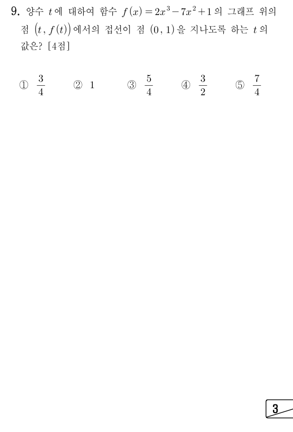

판단접점의 좌표가 로 주어져 있으니까, 접선의 식을 로 먼저 세우고 ㉢의 점을 대입하는 쪽으로 가자.
주의㉢의 점 은 접선이 지나는 점이지 접점이라고 준 게 아니야. 그래서 을 기울기로 쓰면 안 돼.
주의을 넣으면 에서 음의 부호가 나와. 이 부호를 놓치면 삼차항 계수가 달라져.
단축㉡의 상수항 1이 좌변의 1과 바로 지워지니까, 전개는 항과 항만 챙기면 돼.
판단은 ㉠의 양수 조건에 어긋나서 버려. 이건 점 자체가 접점인 경우야.
확인은 접선의 식에 을 넣어서 의 값이 ㉢의 1이 되는지 보는 거야.
단축접선은 접점 와 점 을 둘 다 지나. 그래서 두 점을 이은 직선의 기울기가 와 같다고 놓으면 접선의 식을 전개하지 않아도 돼.
주의로 나눌 수 있는 건 ㉠에서 이라 분모가 0이 아니기 때문이야. 마지막에 을 버리는 근거도 ㉠이야.
언제 쓰나: 접선이 지나는 점의 좌표가 주어져 있고, 그 점이 접점과 다른 점일 때 쓸 수 있어.